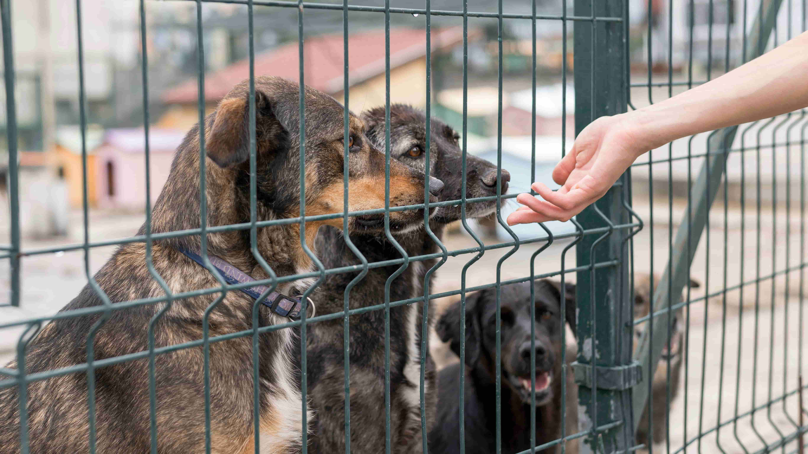

A ONG Doce Lar é um espaço de amor, proteção e esperança para animais resgatados. Nossa missão é oferecer
acolhimento, cuidados e uma nova chance para cães e gatos que foram abandonados, vítimas de maus-tratos ou
que vivem em situação de risco.
Navegue pelo nosso site para conhecer nossos projetos, apadrinhar um bichinho, tornar-se voluntário ou fazer
parte dessa corrente do bem por meio de doações.

Missão
Resgatar, cuidar e promover a adoção responsável de animais em situação de abandono ou maus-tratos,
proporcionando a eles uma vida com dignidade, saúde e amor.
Visão
Ser uma referência no acolhimento e reabilitação de animais, atuando com ética, compaixão e compromisso
para construir uma sociedade mais consciente e respeitosa com todos os seres vivos.